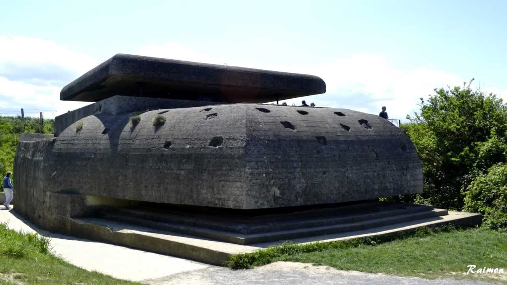
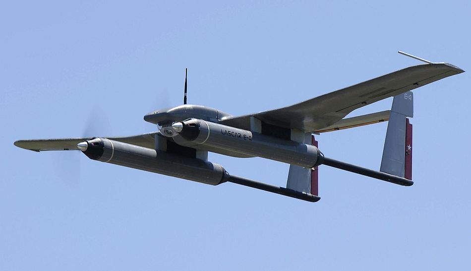

Historia de los drones
Desde el siglo XIX hasta el 2016: evolución y surgimiento del drone moderno
No nos despertamos ayer en este nuevo mundo presa de los drones o aeronaves pilotadas de forma remota. Hay una serie de hechos históricos y figuras relevantes que poco a poco han ido dando forma a lo que hoy conocemos como una nueva forma letal de matar a distancia y que además ha originado el crecimiento del drone o UAV como una tecnología potente a desarrollar también en el sector civil.
La idea del avión no tripulado es antigua. A pesar de que a menudo asociamos los drones con los robots militares de hoy, los aviones no tripulados, de una forma u otra, se han utilizado durante décadas. Uno de los primeros usos registrados fue por los austriacos en julio de 1849 después de que se pusieran en marcha alrededor de doscientos globos aerostáticos no tripulados montados con bombas en la ciudad de Venecia. Menos de dos décadas después de la Guerra Civil en EE. UU, fuerzas de la Confederación y de la Unión volaban globos para misiones de reconocimiento. En 1896 Samuel P. Langley desarrolló una serie de aeronaves a vapor, aviones sin piloto que fueron trasladados con éxito a lo largo del río Potomac, cerca de Washington DC. La práctica de la vigilancia aérea más tarde surgió en la Guerra Hispanoamericana de 1898, cuando los militares de EE.UU. equiparon una cámara a una cometa, dando lugar a una de las primeras fotografías de reconocimiento aéreo.

La Primera Guerra Mundial

“En 1849 se le atribuye al ejército austriaco la utilización de 200 globos aerostáticos no tripulados que se cargaron de bombas sobre la ciudad italiana de Venecia, uno de los primeros antecedentes del uso de aeronaves no tripuladas “
En la Primera Guerra Mundial, se utilizó ampliamente la vigilancia aérea. Los militares utilizaban estas cometas para obtener fotografías aéreas y seguir los movimientos del enemigo formando mapas de situación. Así, este sería uno de los pasos en la evolución de los aviones no tripulados en Estados Unidos, proceso al que se suman otras cuatro fases posteriores que son las siguientes.
En primer lugar, el precursor del drone se utilizó como blanco de práctica para las fuerzas militares de principios del siglo XX. En segundo lugar, en el período de entreguerras y en la Segunda Guerra Mundial, el avión no tripulado fue diseñado para ser como una especie de bomba volante que podría ser enviado tras las líneas enemigas. En tercer lugar, durante la Guerra Fría, el avión no tripulado fue visto como una plataforma de vigilancia viable capaz de capturar datos de inteligencia en áreas de difícil acceso. En cuarto lugar, el drone, en la guerra contra el terrorismo, se ha convertido en un arma que fusiona la capacidad de vigilancia y la de matar, convirtiéndose en un “depredador”.
En cualquier caso, las aeronaves no tripuladas no hubieran sido posibles sin grandes avances tecnológicos como la radio. Antes, llegaría el telégrafo, comienzo de la revolución en el campo de las telecomunicaciones. En 1858, el primer telégrafo trasatlántico se completó, marcando una etapa clave en las comunicaciones. El primer mensaje oficial se lanzó el 16 de agosto de 1858 y decía: “Europa y América están unidos por la comunicación telegráfica. Gloria a Dios en las alturas, y en la tierra paz y buena voluntad para los hombres “. El planeta se había convertido de repente en más pequeño. Sin embargo, el cable submarino era frágil y lento, y la comunicación se ceñía a los límites físicos del terreno y la distancia del cable. La radio, sin embargo, podía viajar a través de la atmósfera. El espectro electromagnético ofreció una liberación total para el intercambio en las comunicaciones humanas.
Nikola Tesla
“Nikola Tesla sacó a relucir en un estanque en Nueva York en 1898 algo que cambiaría el rumbo del mundo y que revolucionaría además el futuro del guiado de objetos: el radio control”
Nikola Tesla demostró por primera vez el mando a distancia o radio control de un vehículo al final del siglo XIX. En un estanque en el Madison Square Garden de Nueva York en 1898, el inventor y showman controlaba a distancia un barco con una señal de radio. Esta fue la primera aplicación de ondas de radio en la historia, lo que significa que la patente de Tesla Nº 613.809 fue la cuna de la robótica moderna. En esa masa de agua flotaba un enorme posible avance militar.
En 1916, la idea de las armas guiadas de forma remota despertó el interés del capitán Archibald M. Low, de la Royal Flying Corps en el Reino Unido que supervisó la construcción de una serie de aviones dirigidos por control remoto que fueron equipados con explosivos.
Aeronaves para la guerra
Durante la Primera Guerra Mundial el inventor del giroscopio, Elmer Ambrose Sperry, desarrolló una plataforma de aeronaves sin piloto con un dispositivo para lanzar torpedos con una catapulta. Una publicación del New York Times de 1926 apunta a que estas aeronaves eran guiadas con gran precisión y que después de una distancia predeterminada giraban y volaban hacia abajo en vertical, con una carga tal de TNT capaces de volar una población entera. El programa quedó extinto al acabar la guerra en 1918 y de hecho también hay reportes de que eran habituales los fallos técnicos y eran numerosos los accidentes con estos prototipos.
La “Hewitt Sperry” o “bomba volante fue capaz de volar 50 millas cargada con una bomba de 300 libras de peso. Aún así, es importante destacar que este avión no tripulado se mejoró inequívocamente con la adición de la tecnología giroscópica de Sperry. El éxito de este proyecto llevó el Ejército EE.UU a poner en marcha un segundo proyecto, el Kettering torpedo aéreo “Bug“, desarrollado por la empresa Dayton-Wright Airplane Company. El “insecto” fue esencialmente un torpedo aéreo, sin piloto y guiado por los controles preestablecidos. En Alemania, un proyecto similar estaba siendo iniciado por el Dr. Wilhelm von Siemens entre 1915 y 1918. El Siemens Torpedo Planeador era un misil que se valía de un Zeppelin y luego se guiaba hacia su objetivo por radio. La bomba volante, el Bug y el Torpedo Planeador eran todos primeros precursores de los misiles de crucero contemporáneos.
A lo largo de la década de 1920, se utilizaron varios buques controlados de forma remota para la formación de unidades de artillería. La década de 1930 vivió una oleada de interés militar en vehículos controlados a distancia, entre los cuales surgió la segunda generación “Bug“.
Durante la Segunda Guerra Mundial el asunto se trató de forma diferente. La Marina estadounidense lanzó un nuevo programa, llamado Operación Anvil, para identificar bunkers alemanes usando bombarderos re-adaptados para tolerar una capacidad doble con explosivos y siendo guiados por control remoto para estrellarse con los nazis en Alemania y partes de Francia controladas por Hitler. La tecnología por control remoto estaba muy limitada, incluyendo dispositivos de radio conectados a un motor, con lo que los pilotos tenían que guiar el artefacto a una altura determinada para luego tirarse en paracaídas. En la práctica, el programa fue un desastre, muchas aeronaves se estrellaban o peor. El hermano mayor de John Fitzgerald Kennedy, Joseph, fue uno de los primeros pilotos del programa y murió en Agosto de 1944 cuando un” prototipo de drone” que él pilotaba explotó repentinamente cerca de Suffolk, Inglaterra.
La ironía de la particular misión del hermano de JFK radica en que ésta, era bombardear un sitio nazi dónde los científicos alemanes desarrollaban un sistema de explosivos remoto, siendo el primer programa militar de misiles. De hecho, los alemanes empezaron el programa de misiles debido a las dificultades de las aeronaves sin piloto controladas remotamente. Después de la guerra EE.UU y Rusia se sumarían a la fiebre de los misiles.
Pero antes de eso, a mediados de la década de 1940 asistimos al desarrollo del GB-1 Glide sistema de bombardeo aéreo ideado para eludir las defensas aéreas alemanas. Era un planeador viable equipado con una bomba estándar de 1.000 o 2.000 libras de peso. Hecho de madera contrachapada con las alas, timones, y controlado por radio, eran guiados hacia líneas enemigas. En 1943, ciento ocho GB-1 fueron lanzados sobre Colonia, causando graves daños. Más adelante en la misma guerra vino el GB-4, o el “Robin“, que fue la primera “arma guiada retransmitida por la televisión“. Aunque potencialmente revolucionario, la imagen desvelaba que sólo podía funcionar en las mejores condiciones atmosféricas.
“La pérdida de 40.000 aviones y 80.000 personas de tripulación durante la Segunda Guerra Mundial fueron motivos que hicieron centrar el interés en conformar una fuerza aérea robótica en Estados Unidos, una cuestión financiera y humana que había que resolver”
| País | Planeador no tripulado | Planeador tripulado | Avión no tripulado | Avión tripulado |
|---|---|---|---|---|
| Inglaterra | Cayley, 1809 | Cayley, 1809 | Cody, 1907 | Cody, 1908 |
| Francia | Ferber, 1901 | Du Temple, 1857 | Santos - Dumont, 1906 | |
| Alemania | Lilliental, 1891 | |||
| Japón | Le Prieur/Albara, 1909 | Ninomiya, 1891 | Nagahara, 1911 | |
| Estados Unidos | Chanute, 1896 | Langley, 1896 | Hnos. Wright, 1903 |
El programa de Fuerza Aérea y la guerra de Vietnam
A finales de 1946 un programa de la Fuerza Aérea de EE.UU. fue aprobado para desarrollar tres tipos de aviones no tripulados para su uso como objetivos de formación. De los tres, el que se lanzaba desde el aire, el modelo Q-2, fue el más importante, convirtiéndose en el padre de una clase de aviones “diana” construidos por la Compañía Aeronáutica Ryan. El “Firebee” se probó por primera vez en 1951 en la base aérea de Hollman. Este modelo podía mantenerse en vuelo durante dos horas y fue capaz de alcanzar alturas de hasta 60.000 pies.
El desarrollo de los drones se colapsó durante décadas debido a la poca necesidad que había de ellos como consecuencia del éxito y los desarrollos en el campo de los misiles. A mediados de los 50 el ejército de los Estados Unidos desarrolló un tipo de misil de largo alcance con un sistema de guiado preciso, algo más parecido a una pequeña aeronave.
La guerra de Vietnam sin duda fue muy importante en esta carrera histórica de los drones para ser lo que son hoy en día. El conflicto dio a luz el programa más sofisticado de vigilancia con aviones no tripulados en la historia de la aviación. Por otra parte, la guerra de Vietnam fue la primera “guerra tecnológica” de la historia: una guerra llevada a cabo de acuerdo con principios técnicos, modelos estadísticos y sistemas electrónicos. De particular importancia fue el aumento en el campo de batalla de los dispositivos electrónicos. Durante la década de 1960 el Departamento de Defensa de los EE.UU. comenzó a automatizar e informatizar el campo de batalla con sensores remotos y superordenadores para escuchar los movimientos del enemigo o manejar aviones no tripulados Firebee a través de los cielos de la selva vietnamita.
Es difícil apreciar lo rápido que avanza la tecnología militar durante la Guerra Fría. En 1960, Gary Powers fue derribado sobre la Unión Soviética, mientras que pilotaba un avión espía U-2. La administración de Eisenhower revolvió cielo y tierra para mejorar su programa de aeronaves no tripuladas. En el mismo año, la empresa Ryan Aeronautic Company propuso una versión de su avión no tripulado llamado “carro rojo” como un vehículo de reconocimiento. En 1962, Ryan obtuvo fondos para desarrollar el “Gran Safari” de la Fuerza Aérea, siendo el primer avión no tripulado de vigilancia. Los Firebees de propulsión a chorro pasaron por varios cambios de modelo y denominaciones militares: “Ryan 147“, “AQM-34” y “Luciérnaga” fueron lanzados desde las alas de un avión Lockheed CC-130 Hércules, que actuaba como una nave nodriza de coordinación para todo su enjambre de aviones no tripulados. Estos volaban rutas preprogramadas y también podían ser controlados por operadores de radio a bordo del Hércules. Después de realizar su misión de vigilancia los “insectos” despliegan sus paracaídas y son recuperados por helicópteros posteriormente.
Aviones no tripulados de EE.UU "Luciérnagas"
En mayo de 1964, EE.UU comenzó a considerar el envío de aviones no tripulados para reemplazar sus U-2 en misiones de espionaje sobre Cuba. “Luciérnagas” operados por EE.UU fueron posteriormente utilizados para vigilancia en las denominadas “zonas sensibles”, escenarios protagonistas de la Guerra Fría: entre ellos Cuba, Corea del Norte y la República Popular de China. En noviembre de 1964, el Washington Post informó que China afirmaba haber derribado un avión de reconocimiento estadounidense sin piloto. El ejército de Estados Unidos mantuvo silencio sobre estos hechos, al igual que haría décadas más tarde después de que los iraníes capturaran un avión avanzado de la CIA.
Durante la guerra de Vietnam, los Lightning Bugs se utilizaron asiduamente sobre Vietnam del Norte después de que terminara la operación Rolling Thunder en 1968 (intento del presidente Lyndon B. Johnson por terminar con la industria y comunicaciones en el norte del país y detener los suministros al Vietcong y los continuos envíos de tropas del enemigo). El “campo de batalla electrónico” de la guerra de Vietnam es fundamental para entender el desarrollo del avión de guerra no tripulado contemporáneo, el drone, precursor a su vez de los modelos para uso civil.
Entre 1964 y 1975, estos Lightning Bugs realizaron más de 3.500 misiones de combate en Vietnam. Y fueron desde luego bastante caros. En 1969 las operaciones con aviones no tripulados a baja altura estaban costando 250 millones de dólares al año. En 1972 aviones teledirigidos de vigilancia fueron equipados con tecnología LORAN (Long Range Navigation o navegación de largo alcance) que mejoraron drásticamente la capacidad operacional de estas aeronaves no tripuladas gracias a un sistema de ayuda a la navegación electrónico que utiliza el intervalo transcurrido entre la recepción de señales de radio transmitidas desde tres o más transmisores para determinar la posición del receptor (algo parecido a la triangulación que utilizan los GPS de hoy en día).
En Vietnam, aviones no tripulados “luciérnagas” se utilizaron extensamente y para gran variedad de misiones. Entre 1964 y 1975, más de 1.000 Lightning Bugs realizaron más de 34.000 misiones de vigilancia en todo el sudeste de Asia. De hecho, muchas de las fotografías aéreas de Vietnam del Norte que aparecieron en la prensa estadounidense fueron tomadas por estos aviones no tripulados. Los gestores de la guerra no estaban dispuestos a renunciar a la aeronáutica controlada remotamente: miles de pilotos estadounidenses habían muerto y miles de aviones habían sido destruidos. A medida que la guerra de Vietnam llegaba a su fin, los robots se estaban preparando.
Aviones no tripulados en la Guerra Fría
De hecho, además, la CIA desarrolló otros aviones durante la Guerra Fría. Estos otros prototipos fueron creados en colaboración con la Douglas Aircraft Company en la década de 1960 y se probaron en el Área 51, a pesar de que se presentaron a principios de 1970.
Estos fueron de algún modo pre-drones, versiones en miniatura de lo que el ejército había pretendido conseguir desde ni más ni menos que 1917. Ya entonces (años 60-70) tenían sistemas de guiado, podían llevar cámaras e incluso algunos podían modificar la ruta en pleno vuelo; lo que no podían hacer es tener un comportamiento no predeterminado ni mucho menos volver a base. En los siguientes años los ingenieros de las fuerzas armadas siguieron trabajando en aeronaves no tripuladas, para uso mayoritariamente de vigilancia, que no requerían un complejo sistema de maniobras y requerían técnicas de guiado menos precisas.
En 1970 se decidió que era el momento oportuno para los vehículos teledirigidos (RPVs). La Fuerza Aérea puso en marcha un programa para aumentar las capacidades de alcance y de vigilancia electrónica de las RPV. El programa consistió en la financiación de las compañías Boeing y Ryan para desarrollar aviones no tripulados resistentes que volaran a gran altitud. Estos prototipos fueron los más ambiciosos aviones teledirigidos de vigilancia no tripulados en la historia de la Fuerza Aérea, capaces de volar más de 24 horas, siendo pilotados desde el suelo. Al mismo tiempo que los aviones no tripulados, se desarrollaron una serie de “mini-RPV” como los prototipos Praeire, que eran capaces de llevar láser y cámaras de video. Además de aviones no tripulados de vigilancia, la Fuerza Aérea comenzó a experimentar con Firebees armados.
La década de 1970 se definió a este respecto por una mezcla de inquietud, escepticismo y la especulación sobre el futuro y la confianza en las aeronaves sin piloto. Parte de la inquietud provenía desde el día en que un piloto humano fue “derrotado” por un avión no tripulado. En 1971, un funcionario de Ryan desafió a John Smith, entonces comandante de la prestigiosa unidad “Top Gun” a volar contra un avión no tripulado. El F-4 Phantom (interceptor y cazabombardero supersónico, biplaza, bimotor y de largo alcance) y su piloto no podían seguir el ritmo de los giros y vueltas inhumanas del avión robot. La década de 1980 vio como el testigo en el desarrollo de las aeronaves no tripuladas pasaba a Israel, siendo pioneros en su utilización contra las fuerzas sirias, lo que llevó a formar la primera corporación UAV conjunta. Casi todas las piezas estaban en su lugar para el inicio del reinado del Predator. excepto, por supuesto, el Predator. Se necesitarían décadas antes de la siguiente fase.
Década de los 80's y 90's
“Durante los años 80 se consolida la tecnología UAV como algo tecnológicamente fiable y que potencialmente ya podía rendir más que un avión tripulado, como puso de manifiesto el enfrentamiento hombre-máquina entre el piloto de la unidad de élite Top Gun, John Smith, y su F-4 Phantom contra un avión no tripulado”.
Solo fue con el profundo desarrollo en computación y sistemas de control electrónico durante los años 80 y 90 que los drones del presente fueron tomando forma. Y no sería hasta finales de los 90 que las fuerzas aéreas americanas comenzaron a tratar los aspectos técnicos que llevaron a dotar a estos de drones de misiles.
Si bien los avances en aviones no tripulados fueron impulsados por las exigencias de la inteligencia cartográfica, estos objetos no tripulados estaban muy ligados a una serie de objetos legales que permitieron su despliegue. En otras palabras, la relación entre la tecnología y la ley es extremadamente importante en el trazado de la escalada del avión no tripulado Predator; ambos elementos van de la mano en la adquisición de conocimiento geográfico y vigilancia, consecución de objetivos, y en última instancia la toma de decisiones sobre la eliminación de objetivos. Esta relación entre tecnología y ley se materializa en dos figuras que alimentaron los motores del imperio del Predator: un ingeniero israelí de nombre Abraham E. Karem y un yihadista saudí llamado Osama bin Laden.
Historia contemporánea
Y llegamos a la historia contemporánea de los drones, marcada sin duda por un hecho acontecido hace ya catorce años, concretamente en Febrero de 2oo2, que es cuando la CIA usara por primera vez el drone Predator para eliminar un objetivo de inteligencia. La acción fue llevada a cabo en Afganistán, cerca de la ciudad de Khost. El objetivo en cuestión era Osama Bin Laden, al menos eso pensaba la CIA. Donald Rumsfeld (secretario de Defensa durante el gobierno Bush) después argumentó el uso del misil Hellfire, como una decisión bien tomada. El incidente sucedió durante un breve periodo en el que el ejército, que asistía en el programa de drones de la CIA prestando operadores de servicio, desconocía la existencia del propio programa. Durante días de ataques, periodistas en el terreno no paraban de recabar testimonios de afganos que decían que los muertos eran civiles que se dedicaban a recoger chatarra. El Pentágono empezó a estar en el ojo informativo y así es como comenzó la larga década del drone.
La CIA había empezado a volar con drones en Afganistán desde el año 2000. Fue sólo desde los atentados del 11-S que empezarían los vuelos de drones armados. Algunos fueron usados a finales del 2001 contra los talibanes, pero no sería hasta el 2002 que se usaran sin ser un apoyo explícito al ejército. El ataque de Febrero de 2002 fue una operación para matar de la CIA, sin tener que ver con ninguna operación militar en curso. Parece que todo el hecho de cambiar drones de vigilancia por drones con armas es que anteriormente al ataque de Febrero de 2002, dos operadores de drones dijeron haber identificado un objetivo, un hombre alto, que se pensó podría ser Osama Bin Laden. Fue por este motivo que se legitimó el uso de drones armados y tras el primer ataque selectivo fallido con drone, se siguió argumentando como una necesidad que podía salvar vidas americanas.
Este argumento se respaldó afirmando que Zhawar Kili, el sitio objeto del bombardeo, era un conocido complejo de muyahidines, al que se sospechaba podían haberse trasladado Bin Laden e integrantes de Al Qaeda después de la batalla de Tora Bora. Cosa que después se comprobó era improbable ya que la fortaleza era un punto vulnerable para defenderse y según los afganos del lugar las bajas fueron civiles y no combatientes.
Pero muy anteriormente a esto, sabemos que la CIA sólo comenzaría a involucrarse en la tarea de armar drones tras los ataques del 11-S. Aunque la agencia había sido autorizada a colaborar con el ejército en operaciones militares antes de los ataques, los parámetros legales que establecían estas facultades de la CIA seguían siendo algo turbias. Había preguntas sobre quién disparaba el gatillo y bajo qué condiciones. Los asesinatos selectivos eran ilegales por orden presidencial y no estaba claro cuando la CIA tenía permiso para usar fuerza letal o bajo qué circunstancias.
Problemas contra la CIA

Los problemas judiciales que existían allá por 2001, una década más tarde, se quedaron obsoletos y la CIA trabaja mano a mano con el ejército lanzando ataques con drone desde Pakistán a Somalia. Desde entonces hay menos polémicas salvo por académicos o activistas que denuncian que la CIA no es fiable en sus objetivos al 100%, y que los errores en los asesinatos selectivos con drone parecen no ser una excepción.
¿Qué es entonces lo que importa sobre el uso de drones por parte de la CIA? Los drones armados son sólo un instrumento más de la CIA y parece que la identidad de los operadores, ya sean militares o de inteligencia, importa poco a las víctimas golpeadas por los misiles Hellfire. Por tanto ¿qué es aquello que llama la atención a víctimas, insurgentes, periodistas o abogados sobre el uso de drones armados? ¿Porqué nos interesan, fascinan o molestan?.
Quizás sea su propio nombre amenazante, Predator, que sugiere que este enemigo además de no ser humano no tiene piedad, y cuya misión no es el combate sino la caza y destrucción selectiva. Parece que nada es casualidad ni siquiera el nombre con el que se conocía el software desarrollado para determinar el numero de bajas de víctimas civiles en los ataques, conocido como “Bug Splat o ruido de insectos” o la carga de pago con la que se dotaban estos drones, de nombre Hellfire (los misiles).
Pero el tema está en como matan los drones. Su característica es que se usan principalmente para identificar y eliminar personas individuales, no sitios o fuerzas militares enemigas como tal. A diferencia de un misil que se decide lanzar sobre un objetivo con anterioridad, el Predator busca con precisión y elimina, y digamos que el ejecutor no está presente de forma física, siendo el drone el que perpetra la acción y no un agente de la CIA.
Esta característica física que separa los objetivos a eliminar, de los agentes de la CIA sentados en Langley, es una característica determinante de los drones. Es la forma última de matar, un zenith tecnológico que supone el mayor desarrollo en el mundo de las armas desde el invento de la honda o las flechas hace miles de años. Este proceso de evolución en las armas llevaría después a la catapulta y luego a la artillería, alcanzando ésta su máxima expansión con los misiles nucleares intercontinentales, que aún así son armas de limitado uso táctico y que nunca se han usado. Los drones tienen ese carácter de poder llevar a cabo misiones de larga distancia pero con mucha más flexibilidad y capacidad para su uso diario. El resultado es una violencia ejercida a diario pero en un formato alienado.
Como podemos ver en el siguiente vídeo, la industria del UAV o drone es como se puede suponer un negocio multi-millonario sobre todo en sitios como Israel, mayor exportador mundial y que tiene una cartera de más de cincuenta clientes eso sí todos pertenecientes a sólo dos países; uno de ellos nos podemos imaginar quién es. Israel además de ser pionero y mayor exportador mundial en la industria, también inunda los cielos de la vecina franja de Gaza con sus drones, a los cuáles se atribuyen en el conflicto de 2008-2009 cuarenta y dos ataques con drone y ochenta y siete muertos sólo en ese periodo.
Obviamente no se le escapa a nadie que una de las ventajas primordiales del drone es que aísla a la persona que lo opera del riesgo de la operación. Los drones hacen del trabajo sucio de matar una tarea más sencilla. Existen, y no es de extrañar, reportes de operadores de drones militares que sufren estrés postraumático tras ver o analizar las consecuencias de los ataques que llevan acabo, visionado de muertos…etc. Pero sin duda nada comparables a las estadísticas de los veteranos de guerra, que sufren la violencia de forma directa y presencial en el campo de batalla.